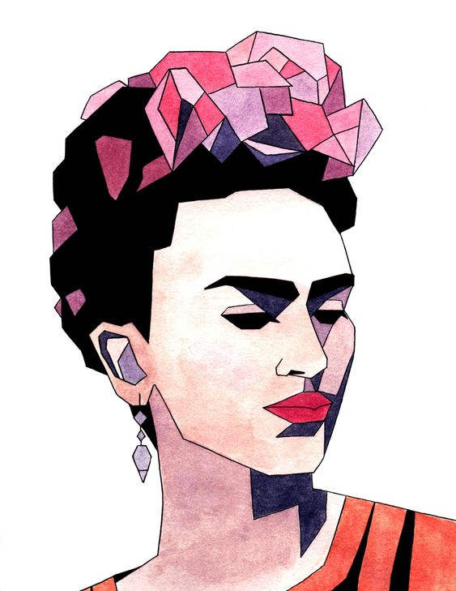

Concepto
El dibujo es una forma de expresión gráfica que consiste en plasmar imágenes sobre un espacio plano a través de distintos tipos de instrumentos de dibujo. Dibujar implica delinear imágenes de forma manual sobre un material de dibujo. El concepto de dibujo refiere tanto al proceso mismo como al producto final.
Los dibujos pueden ser representativos, si reproducen de manera más o menos fiel un objeto real, abstractos, si evocan sensaciones o emociones sin representación física, o simbólicos, si recurren a convenciones culturales (por ejemplo, el dibujo de una señal de tránsito).
El dibujo puede realizarse con una gran cantidad de elementos de dibujo, tales como lápices, marcadores, y tintas, y se realiza generalmente sobre toda clase de papeles, que son el soporte más utilizados, aunque también pueden hacerse dibujos sobre casi cualquier tipo de material, desde plástico hasta metales.

|